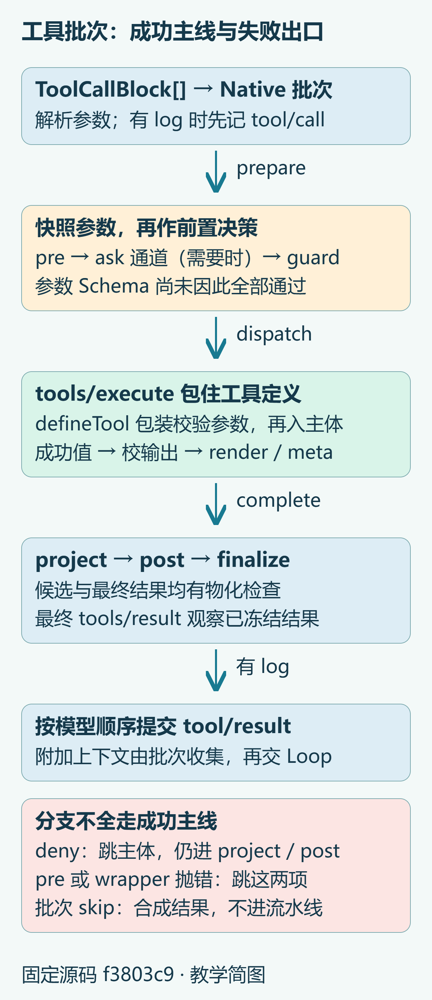
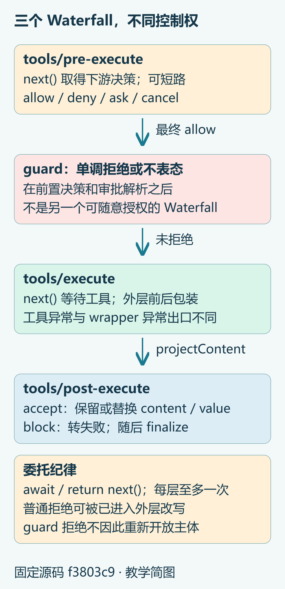
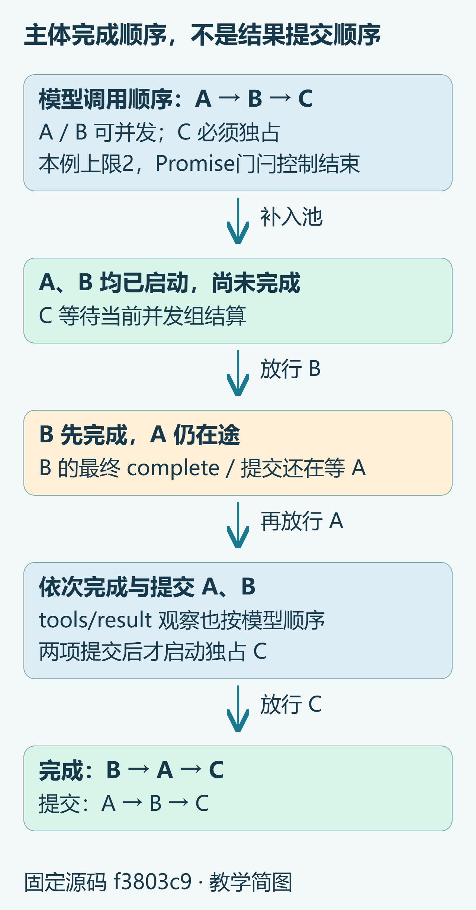
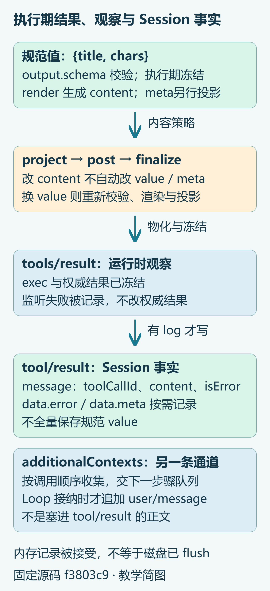

作者私有审查预览 · 实际LessonMarkdown与平台CSS · 未发布，未施测
第四模块集中审查 · H14
230～310 分钟（建议分三段：单次调用70～95、结果处理80～105、调度与综合实践80～110分钟；作者估计，待试读）
两个工具提议，为什么不能直接 Promise.all？
项目阅读助手收到：“请读取 README 和 package.json，分别提取项目信息，然后整理成一份简介。”模型可能一次给出两个 ToolCallBlock。H13 已回答定义从哪里来、当前 Step 准入哪次注册；今天从模型已经提出调用之后接着追。
最容易写出的办法是解析名称、查函数、直接执行，再拼接文本。下面只是问题引子，不是 Harness 的真实 API：
// 教学结构摘录；没有权限、取消、结果归一化和Session结算。
const replies = await Promise.all(calls.map(c => functions[c.name](JSON.parse(c.arguments))));它还回答不了：一个被拒绝时另一个怎样？错误参数会在哪层发现？函数抛错要不要丢掉其他结果？用户取消后，仍在写数据的 Promise 能直接扔掉吗？B 先完成，为何还可能先记录 A？输出为什么不直接等于模型看到的字符串？
本课沿真实组件回答这些问题，官方固定 Commit f3803c96974ad4a94195fb97e5c637e9c2a3afe3。所有“读取”实验都用代码内字符串替身，不读取实际 README 或 package.json；模型是受控 Adapter。规范值、流水线、Native 执行器、Loop 与内存 Session 则使用官方实现。
蓝图 H14 原估110～150分钟；本稿增加四项完整实践、失败分支与真实调度证据后估230～310分钟，端点分别增加120/160分钟。它是作者规划，不是实测课时。分三段完成：先追一次调用；再看谁决定最终结果；最后处理多调用和 Turn。折叠区是完整程序与答案，不必先通读全部辅助文件。
用一条调用找回旧知识
H06 的 Waterfall 是“当前层通过 next 进入下游，再接住返回值”，不是自动把上层返回值当成下一层输入。短路只跳过尚未进入的下游，已经进入的外层仍能继续。H07 的 Effect 管登记归属与释放；已开始的异步工作还要明确等待，撤销监听不等于工作已结束。
H10 的 Step 可以先请求模型，再处理这一响应的整个工具批次；H12 的 ToolCallBlock 包含 id、name、arguments 字符串，ToolResultMessage 用 toolCallId 关联结果；H13 的 ToolDefinition 保存业务函数与输出契约，ResolvedToolSet 把本 Step 的准入绑定到原登记。它们仍不表示工具已经成功执行。
Promise 表示未完成的工作；async 函数返回 Promise，await 等它结束。并发是等待时间重叠，不自动等于多 CPU 线程，也不保证完成顺序。AbortSignal 是合作停止请求，不能凭一个 aborted 布尔值证明所有工作已退出。
想深入再看：语法回顾：await next、返回与门闩
const r = await next(); return r; 等到下游结果，再传给上游；漏 return 会丢掉决策，漏 await 时同步 catch 也未必接住异步拒绝。一般每层至多委托一次；H06 已证明本版本 Waterfall 核心不替你阻止重复 next。不能在有副作用的工具上无条件重复委托。
Promise.withResolvers() 返回 promise、resolve、reject。本课让工具先等待 gate.promise，测试再明确 resolve，从而固定谁先结束；不靠 sleep 猜时序。reached 将“到达门闩”与实际任务结束作竞赛，若任务提前结束就报告错误，避免无限等一个从未到达的阶段。finally 放行剩余门闩并等待卸载，实验不批量删除临时目录。
四层职责：同名 execute，不是同一层
| 层次 | 收到什么、做什么、交出什么 |
|---|---|
ToolsService，ctx.tools.execute(input) | 收到整个 ToolBatchInput，按 Agent Scope 选择当前执行器，委托原始调用批次 |
| ToolExecutor | describe 面向模型描述能力；execute 接收批次。Native 解析参数、调度、取消与记录 |
| ToolExecutionPipeline | 为单项调用提供 prepare / dispatch / complete，实施共享决策、分发和结果归一化 |
| ToolDefinition.execute | 注册定义提供的函数；defineTool 包装先验参数，再调用作者的业务主体，返回规范 JSON |
AgentLoop 在正常助手消息结算后提取其中的 tool-call 块，把整批交给 tools.execute，附 agent、当前 turn/step、signal、toolSet 与并发上限。Native 的 execute 再调用共享 executeToolBatch。见Loop分派点、ToolsService委托与Native入口。
ToolBatchInput 的 calls 是模型原始块数组；signal 必需；agent 可选，提供 Scope 与执行上下文；toolSet 可选，但条件工具需要本 Step 准入；maxParallelToolCalls 可覆盖执行器上限。log:{turn,step} 表示已有模型步骤的根调用日志上下文，并需要 agent。有 Agent 不等于有 log：初始化等步骤外调用可以使用 Agent Scope 而不记根级 tool/call、tool/result。没有 agent/log 的独立调用，更不能凭空宣称有 Session 事实。
执行器选择最近 Scope 的贡献或部署默认，缺失/已卸载的选择会失败；不会擅自换另一个提供方接手已经接受的批次。本课深入 Native；PTC 内部程序调用形式仍按 H13 区分，不把 Native 证据当作 PTC 执行验证。

准备阶段：解析、物化与验证要放到正确位置
先给一项原始块：
{"type":"tool-call","id":"readme","name":"inspect_fixture","arguments":"{\"input\":{\"label\":\"README\"}}"}批次的 parseArguments 把 arguments 文本 JSON.parse 成对象；空字符串变 {}；坏 JSON 则保留原字符串，留给工具自己的参数诊断。它不会把所有坏文本在批次入口直接 throw。对 defineTool 定义，'{broken' 后来得到 INVALID_ARGS；原始 ToolDefinition 若自行处理任意 unknown，必须自己负责输入约定。见batch解析与计划。
pipeline.prepare 会创建执行对象：记录 callId、rootCallId、name、agent、toolSet、signal，铸造不透明 Symbol token；把参数物化为分离的无损 JSON，再深冻结参数。父调用的 token 可作为嵌套身份，不能拿来当用户审批凭证。无法物化的输入形成 final-result，不进入普通策略路径。
这里尚未保证参数满足工具 Schema。 prepare 随后跑 pre、需要时的 ask 通道与 guard；允许后，dispatchToolBody 再核当前定义和准入，调用 ToolDefinition.execute。使用 defineTool 时，它的包装这时才执行 Schema 验证，成功才进入作者主体。实践 C 的坏参数实际轨迹有 pre、around、post，但业务 bodies=0。把所有校验都放在 pre 之前，会同时误解控制流与策略收到的输入。
因此策略必须把 arguments 当 unknown，不能未检查就深读某个业务字段。Schema 合法也不等于获得授权；反过来，前置拒绝时主体包装没运行，也不代表已经验证过所有输入。H13 的 Schema 规则不在这里重教。
冻结还要分层讲。createExecution此时深冻结 arguments；执行身份字段在类型里 readonly，但固定实现的整个 exec 对象直到最终观察前才 Object.freeze。A 的实测是：pre 时 argsFrozen/nestedFrozen=true、execFrozen=false、callId 属性 descriptor 仍 writable；observe 时 execFrozen=true，Reflect.set 失败。不要把 TypeScript 只读契约说成整个生命周期都有运行时强制防篡改。 可信插件仍须遵守不能改 callId/name/arguments/token 的约定，避免日志、分发与结果身份错配；Scope 也不是沙箱。
前置 Waterfall 与守卫：谁能改变什么？
tools/pre-execute(exec,next) 默认下游决策是 allow。监听器可委托，也可返回四类 PreToolDecision：
| 决策 | 当前流水线怎样继续 |
|---|---|
| allow | 后续检查 guard，仍通过才进入 dispatch |
| deny，reason，可选 info | 主体不执行，形成失败；正常拒绝仍走 project/post/finalize |
| ask，可选 reason/displayReason | 通过可选 approval 服务解析；只有 allowed-once 转 allow，其余变拒绝 |
| cancel | 选执行前取消结果，主体不执行；不当作普通权限拒绝 |
ask 只是接入位置。缺 approval 服务、没有可路由 Agent、用户拒绝或无可用通道均不会直接放行；approval 返回 cancelled 且调用方也已取消时，还会进入相应取消分支。A_ask 真实测了“未安装服务”的降级，其他实际审批 UI 与通道行为本课只按源码阅读，留 H15 验证。
ctx.on('tools/pre-execute', async (exec, next) => {
if (shouldDeny(exec)) return { kind: 'deny', reason: '当前不允许' };
return next();
});这是形状示例，shouldDeny 是业务占位函数，不是官方接口。正确日志插件应把下游决策返回；只 await next 却不 return 会破坏契约。异步策略需观察 signal，流水线等待它 settle 后再复查取消，并不会强杀任意策略 Promise。
普通 Waterfall 不自动使 deny 不可改写。已进入的外层可以 await next() 得到内层 deny，然后错误地返回 allow。C-policy 实际证明这种覆盖会让主体运行。单调 guard 放在最终前置决策与 ask 解析之后，接口只返回拒绝 reason 或 undefined，不提供 allow 来撤销别的守卫；第一个拒绝就阻止进入 around/body。正常后置 accept 也不能用新 value 复活一个失败结果。该测试继续加 guard，再故意让 post 换值，主体仍没再运行，最终仍是错误。
不能把这写成“任何可信插件都不可能违约”或“普通 pre 的每一次 deny 都绝对不可逆”。守卫保证的是这个正常契约中的最终拒绝位置，不是对任意同进程代码的安全隔离。prepare与checkGuards应配合 H06 的返回链读。

tools/execute：进入主体之前与之后
前置放行后，tools/execute 的默认 next 指向 dispatchToolBody。外层可以记录开始，await next，取得规范结果后再记录结束；工具无需知道哪个指标插件参与了它。
ctx.on('tools/execute', async (_exec, next) => {
trace.push('around.enter');
const result = await next();
trace.push('around.return');
return result;
});主体由当前注册定义提供，不是 next 在这里新造函数。调用前再次查当前 Scope 与 toolSet，旧声明不能复活被撤销的注册。实际业务函数可以抛 Error，也可以成功返回规范值；pipeline 将普通主体异常转为 isError，仍交给 post。包装层自身抛错则得到 final-result，跳过 project/post，仍进入最终内容处理与观察。两条错误出口不能画成同一条。
包装层按契约可以临时替换 exec.signal 来增加合作式截止时间，并须在 finally 恢复。流水线在主体分发时把原始调用方 signal 重新融合，换成一个新 signal 不能脱离调用方取消。C_signal-replace 真的在 around 中换新信号，原调用方 abort 后主体仍看到 aborted=true，并等门闩放行后才结束。
H13 的 timeoutMs 只是正有限预算声明；专门 timeout policy 才施加截止包装，本课没有用真实计时器验证该策略。合作取消不等于操作系统杀进程；已经执行的写入也不会被 Error: aborted 撤销。本课工具只操作内存，用阶段门闩验证停止与等待。
一个规范值，怎样形成最终结果？
工具输入 label:'README'，主体返回 {title:'README',chars:6}。成功主线分开看输入、处理与产物：
| 位置 | 收到什么 | 产生什么 |
|---|---|---|
| createSuccessResult | 主体返回的 unknown | 无损快照，output.schema 校验，冻结规范 value |
| output.render / presentationMeta | 已验证 value 与参数 | 模型 content、独立可回放 meta；不是修改 value |
| around 返回后 | 规范执行结果 | 分发结果归一化，合入主体 deferContext 的上下文 |
| complete 的 projectContent | 此项 post-result | 工具预先准备的内容投影，可保留或替换 content |
| tools/post-execute | 投影后的结果 | 接受、替换一层、附上下文，或 block |
| finish / finalizeContent | 候选物化后的结果 | 只作最后内容转换，再物化冻结权威结果 |
| tools/result | 已冻结 exec 与权威结果 | 运行时通知；不再作为改写通道 |
| BatchSettlement.commit | 此项最终结果与原始块 | 返回结果表，且有 log 时追加 Session 事实 |
输入规范 JSON 不等于输出内容块。value 是程序可取用的数据；content 是模型读到的 ContentBlock[]；meta 是独立展示事实；additionalContexts 是未来上下文；isError/error.info 描述失败。本课用 text 块，但联合类型不只支持文本。
先观察 A_normal 的实际顺序：
pre.enter → pre.return → guard → around.enter → body
→ render → meta → around.return → project → post
→ finalize → observe其中 pre.return 是前置 Waterfall 已返回决策，不是所有检查已完。guard 还在后面。正常结果为 value {title:'README',chars:6}，content 为 final:project:README：6字，meta 为 {label:'README'}。这些是作者 trace 标记，不是假造的 Session 事件。
post 的三种选择，不可混写
accept 不带替换字段时保留结果；带 content 时仅换内容，不自动改规范值与 metadata。带 value 时须原结果成功、当前定义仍可用，并重新校验新值、重新 render/meta；不能同时带 content 和 value。block 使用反馈形成失败，移除成功 value、旧 meta 和原主体上下文，只保留阻止决策自己提供的上下文。
| A 的对照 | 最终 value | content | meta |
|---|---|---|---|
| content | 原 README/6 | final:后置可见内容 | 原 label=README |
| value | 新 policy/6 | final:policy：6字 | 新 label=policy |
| block | 无 | final:结果被阻止 | 原 meta 不再携带 |
换 value 时，render/meta 出现第二次；projectContent 不因此重新跑一次。只隐藏一段模型文本，内部 value 仍可能被程序调用方取得，所以内容替换不能单独当保密策略。见postExecute与成功结果规范化。
失败可能跳过哪些阶段？
prepare/dispatch 返回的标签很关键：post-result 才进入 project/post；final-result 直接 finish。不要把每条路径都机械写成“九步全部执行”。下面按源码分支整理；guard自身抛错仅静态核对，其他列出的入口由A/C对照实际运行：
| 情况 | 业务主体 | project / post | finalize / tools/result |
|---|---|---|---|
| pre deny、guard deny、pre cancel | 不运行 | 会进入 | 有可见定义时 finalizer；观察一次 |
| 未知工具 | 不运行 | 默认共享分发中仍到 post；无该工具 projector | 无工具 finalizer；观察一次 |
| defineTool 参数错、主体抛错、输出 Schema 错 | 主体依各阶段为0或1 | 错误仍交 post | finalizer与观察 |
| pre/guard/around 自身抛错 | 依已到达阶段 | 跳 project/post | 已捕获 finalizer 可处理错误，再观察 |
| project 抛错 | 可能已经运行 | post 被跳过 | 错误交 finish |
| post 抛错 | 可能已经运行 | 已运行到 post | 错误交 finish |
| finalize 抛错 | 可能已经运行 | 依此前路径 | 归一化错误后观察，不重跑 finalizer |
| 批次取消后未启动的 skip | 不运行 | 不进该项流水线 | 不发该项 tools/result；批次合成结果 |
finalizer 接到的可能是失败和不合法参数，不能假设业务参数已校验。它应同步、只返回内容替换或 undefined，不改身份和错误状态。候选结果物化失败可先转错误，finalizer 之后还要再次物化；渲染器、metadata 或内容不满足无损 JSON 也可能失败。本课实际测了输出 Schema、project/post/finalizer 异常；未逐一执行所有恶意 getter、元数据和渲染器故障，相关更广边界是源码阅读，不冒充已测。
tools/result 是本业务额外容纳观察失败的通知：冻结完整 exec 后逐个调用选中的观察者，记录同步抛错或拒绝，不把观察失败重新变成工具失败。A_observer-throw 仍成功。这个保障不是通用 Cordis emit 自动具备，也不意味着异常日志系统自身损坏仍已覆盖。
并发池与独占屏障：谁结束，谁先提交？
Native 的调度使用 pipeline.executionMode：只有分类器明确返回 true 才是 parallel；未知、隐藏、未声明或抛错分类器均按 exclusive。defineTool还会把不合法参数的分类降为exclusive；原始工具的分类器自行负责unknown输入。isConcurrencySafe 是作者对重叠的声明，仍须真实满足共享状态约束，不是自动授予线程安全。
批次先选择首项模式。parallel 组使用有界滚动池，空位可以补后来仍属 parallel 的调用；exclusive 自己形成屏障。显式 maxParallelToolCalls 必须是正整数，优先于执行器配置；0或1.5直接 RangeError，发生在批次内部 try 包装之前，不应一概称 ToolBatchExecutionError。
准备和前置策略顺序推进；dispatch/主体可以重叠。已完成的槽位先存着，commitReady 只沿连续的模型顺序推进：前面的还未就绪，后面的不能先 complete/提交。post 与最终观察因此也不是按主体完成顺序抢先运行。后续项启动前还会重新分类，已准备或已进入主体的调用不因此自动回滚。runGroup需要连同 fillPool、commitReady 的 await 一起读，不能只搜 parallel 这个词。
实践 B 先给三个工具：A、B 可并发，C 独占，上限2。门闩让 B 先结束，再让 A 结束。实际轨迹是：
start:A → start:B → end:B → end:A
→ observe:A → commit:A → observe:B → commit:B
→ start:C → end:C → observe:C → commit:Cstart/end 是作者业务轨迹；observe 是 tools/result；commit 则确实来自 Session 的 tool/result 通知，三种来源分别保存。不是手工拼出一个预期数组冒充执行。B先结束并不等于它的 post 和 Session 结果先结算；C 也不能趁 A 尚在途偷偷开始。

把上限改1，轨迹变串行。为证明“滚动”不是分两人一组固定等待，B_rolling 在 C 前再加一个安全 D：B结束后 D 已启动，此时 A仍未结束、还没有结果提交；D结束后再放A，提交仍按 A/B/D。B_reclassify 则在 A 的 pre 中把 B 的分类改为独占：B等 A 提交后才启动。这说明分类会复查，声明不能永久缓存。
B_body-error 中 B 业务抛错，被归一化为该项 isError，其他调用仍执行，Turn最终完成并有下一请求。普通工具失败不是 JavaScript Promise.all 的“丢掉所有结果”，更不是一律终止 Agent。
tools/result 与 tool/result：差一个 s，职责差一层
tools/result 是冻结结果的运行时观察点；tool/result 是有 log 时被 Session 接受的事实。观察发生在 BatchSettlement.commit 之前；observer 抛错被容纳，Session append 被拒绝则是不同的基础设施问题，不能混为“工具业务失败”。
每个实际启动的调用，在 prepare 之前由 settlement.start 追加 tool/call，保存原始 id/name/参数文本；因此这条 call 表示调度已接手，不证明作者主体已经开始。commit 创建 tool 角色消息，以原 ToolCallId 关联，保存 content/isError，以及可选 error.info 和 meta；用 sourceEventSeqs 关联对应调用事实。规范 value 不全量写进这个消息。普通 Error 未必有稳定 error code，不能给所有业务失败杜撰一个统一代码。
batch skip 会为尚未启动项合成 call/result 对，保持模型调用的结果齐全；这时没有该项 pipeline 观察。内部调度失败的未结算调用则交给 Loop 的保守修复，可能出现有结果而没有 tool/call 的 NOT_STARTED，不能套用 skip 的配对规则。

主体 exec.deferContext(message) 与 post 的 additionalContexts 按调用顺序汇入批次。Loop 在批次返回后放入 next-step 队列，实际接纳时才写 user/message；它们不是随手塞进 ToolResultMessage 的正文，也不应在外层结果尚未完成时抢先注入。block 会丢弃原主体上下文，保留阻止决策明确提供的上下文。取消路径是否保留已产出上下文，应看规范结果与 Turn 逻辑，不能一句“取消全丢”概括。
exec.concludeTurn() 只标记权威成功结果；批次汇总 concluded，不跳过本批剩余调用。无其他待处理材料时 Loop 可完成 Turn，不再请求模型；若同时有已排入 nextStep 的附加上下文，Loop 仍可能继续下一 Step。D_conclude 与 D_conclude-context 的请求次数分别是1与2。block 后成功标记不再保留；它自己附的上下文又可能让下一 Step 有材料。这不是强行退出整个进程的命令。
失败与取消：错误表达不等于工作已退出
实践 C 没有 Agent/log，因此只观察组件结果，不宣称其决定了某个 Turn。实际边界在 D 另验。
| C 的输入或故障 | 作者主体次数 | 最终表现 | 已测等待边界 |
|---|---|---|---|
| unknown | 0 | UNKNOWN_TOOL | pre/around/post 后观察 |
| parse / args | 0 | INVALID_ARGS | 坏JSON保留字符串，Schema包装拒绝 |
| deny | 0 | isError，拒绝原因，无强制统一code | 不进入 around/body |
| pre-abort | 0 | ABORTED_BEFORE_DISPATCH | 批次skip，不进入该项流水线 |
| body-throw | 1 | isError，业务消息 | post仍运行 |
| output | 1 | INVALID_TOOL_OUTPUT | 不把坏规范值当成功 |
| post-throw | 1 | isError，后置消息 | 最终观察仍发生 |
| pre-pending-abort | 0 | ABORTED_BEFORE_DISPATCH | 等前置门闩返回后再判取消 |
| pending-abort / signal-replace | 1 | ABORTED | abort时尚未settle，放行主体后才返回 |
| post-abort | 1 | ABORTED | 主体已结束，仍等post返回再取消成功结果 |
| snapshot | 0 | 非无损JSON错误 | 直接testkit输入，非原始模型块路径 |
| scheduler | 1已开始并退出 | ToolBatchExecutionError，partial为空 | 停止补位，先drain已开始dispatch，再拒绝 |
ABORTED 与 BEFORE_DISPATCH 的内部判断看定义执行包装是否已调用；它不必等于作者业务体内计数，参数验证可能在包装里失败。已有工具错误也不会被取消检查一律改成取消代码：源码只在相应位置把成功结果替换为取消。表里的门闩实验刻意让主体成功返回，才观察到取消覆盖成功。
内部错误与业务错误的关键差别是：正常流水线多数异常已被转为结果；调度器自己违反不变量、prepare/complete 等意外拒绝、或 Session 记录失败，可能使批次在 drain 后以 ToolBatchExecutionError 拒绝。其 partial 只有已经提交的结果和上下文，不代表所有启动过的工作结果都已提交。C_scheduler 用实例方法的受控故障注入证明“主体已经退出，但没有完成提交”；没有改官方源码。
Loop 捕获该错误后保留 partial 的上下文，抛出 cause；拥有步骤的外层 ToolCallRecovery 根据已记录的调用与结果补齐缺项。D_internal 在第二项 complete 处失败：readme 的已提交成功保留；package 已有 call、没有成功提交结果，所以补 TOOL_OUTCOME_UNKNOWN；third 没有记录启动，补 TOOL_NOT_STARTED，然后 Step/Turn 以错误关闭。修复器在 packages/core/session/src/repair.ts，不在臆造的 agent-loop/tool-call-recovery 文件里。
结果未知不能解读成“工具肯定没做事”。它可能已经有外部副作用，只是结果没提交；盲目重试可能重复写入。应按工具语义核外部状态或向用户确认，只有能证明只读、幂等或安全补偿时才决定重试。本课没有实现恢复引擎、真实写入或磁盘崩溃复原；H20 才深入恢复。
回到同一任务：从调用事实到下一请求
D_success的两项工具默认独占，下面保留实际runtimeTrace的position和Session seq，省略其余记录。position是作者按真实回调先后记录的全局观察位置，不是新增Session事件；无seq的行也不冒充持久事实。
| 来源 | position / Session seq | 本次实际观察 |
|---|---|---|
| Loop请求边界 | 8 / 无 | 请求1已从前缀重建核对 |
| Mock Adapter | 9 / 无 | 收到声明与用户请求 |
| Session | 10 / 8 | assistant/message含readme、package两个ToolCallBlock |
| Session | 11 / 9 | tool/call记录readme原始参数 |
| 工具业务 | 13 / 无 | readme主体开始，返回README/6规范值 |
| 运行时观察 | 14 / 无 | tools/result取得已冻结权威结果 |
| Session | 15 / 10 | tool/result以message.toolCallId=readme关联 |
| Session | 20 / 12 | package结果也已提交 |
| Session | 26、27 / 18、19 | 下一Step接纳补充readme/package两条user/message |
| Mock Adapter | 29 / 无 | 请求2读取结果与补充上下文，再返回固定简介 |
同样的输入若走deny、取消或内部故障，不能照抄这条成功轨迹。实践D保留全部对照；本课只把工具结果接到下一模型请求，不宣称真实文件访问、磁盘落盘或模型简介质量已验证。
四项实践：完整代码与解释
在本仓库根运行：
python -X utf8 docs/deepseek-harness-v2/h14/scripts/check-sources.py
node docs/deepseek-harness-v2/h14/scripts/run-labs.mjs需 Node24.16.0、已有tsx、固定源码缓存与隔离依赖；完整换机准备与环境变量见 H14 作者目录 README。运行器先核源码 Git blob/SHA256 和依赖 integrity，每次复制 lab 到新临时目录，使用最小环境与新 fixture-home；不读个人 Harness Home、不调用付费模型、不执行危险工具，不删除目录。
当前45项互斥计 C32、D13。B虽然是“实践B”，证据等级为D：它接通真实 Loop、Prompt、Tools、Native、Session 和 Mock Adapter，不要把实践字母当证据等级。教学主体与模型替身不另记A，Cordis作为依赖不重复记B。E完整应用、学员试读、实测时长与独立外审分别待验证。
想深入再看：完整公共准备
import assert from 'node:assert/strict';
import { Context } from '@deepseek-ai/cordis';
import AgentRegistry from '@deepseek-ai/dsh-agent';
import AgentLoop from '@deepseek-ai/dsh-agent-loop';
import LlmRuntime, { LlmAdapter, createUserMessage, ToolCallId, projectToolUpdates } from '@deepseek-ai/dsh-llm';
import type { GenerateOptions, StreamChunk } from '@deepseek-ai/dsh-llm';
import SessionStore, { SessionId } from '@deepseek-ai/dsh-session';
import SessionProjectionRegistry from '@deepseek-ai/dsh-session-projection';
import SystemPrompt from '@deepseek-ai/dsh-system-prompt';
import ToolsService, { defineTool } from '@deepseek-ai/dsh-tools';
import { NativeToolExecutor } from '@deepseek-ai/dsh-tool-executor-native';
export { Context, defineTool, ToolCallId, createUserMessage, projectToolUpdates };
declare module '@deepseek-ai/dsh-llm' { interface MessageSourceMap { 'h14-fixture': { kind: 'h14-fixture' } } }
export const gate = <T = void>() => Promise.withResolvers<T>();
export const textOf = (r: any) => r.content?.filter((b: any) => b.type==='text').map((b: any) => b.text).join('') ?? '';
export const clean = (r: any) => structuredClone({ ...r, signal: undefined });
export const notice = (text: string) => createUserMessage({ content: [{type:'text',text}], source: {kind:'h14-fixture'} });
export function call(id: string, name: string, args: unknown = { input: { label: 'README' } }) {
return { type: 'tool-call' as const, id: ToolCallId(id), name, arguments: JSON.stringify(args) };
}
export function callChunks(calls: ReturnType<typeof call>[]): StreamChunk[] {
return [...calls.flatMap((block,index) => [
{type:'block-start' as const,index,blockType:'tool-call' as const},
{type:'block-end' as const,index,block},
]), {type:'finish',reason:{kind:'tool-calls'}}];
}
export const textChunks = (): StreamChunk[] => [{type:'block-start',index:0,blockType:'text'},
{type:'block-end',index:0,block:{type:'text',text:'已根据内存工具结果整理简介。'}},{type:'finish',reason:{kind:'stop'}}];
export class MockAdapter extends LlmAdapter {
readonly requests: GenerateOptions[]=[];
observe?: (options:GenerateOptions)=>void;
constructor(readonly responses: StreamChunk[][]) { super(); }
async resolveModel(provider: string, model: string) { return {provider,id:model,name:model,defaultMaxTokens:128,context:{contextWindow:4096}}; }
async *stream(options: GenerateOptions) { this.requests.push(options);this.observe?.(options);const chunks=this.responses.shift();
if(!chunks)throw Error('fixture responses exhausted'); for(const c of chunks)yield c; }
}
// 工具只整理代码内字符串；没有文件读取能力。
export function infoTool(name='inspect_fixture', body?: (args: any, exec: any) => Promise<any>, extras: any={}) {
return defineTool({name,description:'提取内存字符串的标签与字数，不读取文件',
parameters:{input:{type:'object',required:true,additionalProperties:false,properties:{label:{type:'string',required:true}}}},
output:{schema:{type:'object',additionalProperties:false,properties:{title:{type:'string',required:true},chars:{type:'integer',required:true}}},
render: (_a,v) => [{type:'text',text:`${v.title}：${v.chars}字`}],
presentationMeta: (_a,v) => ({label:v.title})},
async execute(args,exec) { return body ? body(args,exec) : {title:args.input.label,chars:args.input.label.length}; }, ...extras});
}
export async function components() {
const ctx=new Context(); await ctx.plugin(SystemPrompt); await ctx.plugin(ToolsService);
const executor=new NativeToolExecutor(ctx); ctx.tools.setExecutor(executor);
// 与官方 tool-calls.spec 同样，只为受控故障注入取实例私有字段；不是公开 API。
const pipeline=executor['pipeline'];
return {ctx,executor,pipeline,close:()=>ctx.fiber.dispose()};
}
export async function harness(adapter: MockAdapter, maxParallelToolCalls=2) {
const ctx=new Context(), replay=new Context(), trace:any[]=[],prefixes:any[]=[],loopRequests:any[]=[];
const record=(channel:string,type:string,data:any)=>trace.push({position:trace.length,channel,type,data:structuredClone(data)});
const handles:any[]=[];
for(const p of [LlmRuntime,SessionStore,SessionProjectionRegistry])await ctx.plugin(p as any);
await replay.plugin(SessionStore); await ctx.plugin(SystemPrompt,{includeHarnessIdentity:false,personaPrefix:'整理项目资料。'});
await ctx.plugin(ToolsService); let executor!:NativeToolExecutor;
await ctx.plugin({inject:['tools'],apply(owner:Context){executor=new NativeToolExecutor(owner);owner.tools.setExecutor(executor);}});
await ctx.plugin(AgentRegistry); await ctx.plugin(AgentLoop,{agents:[],maxParallelToolCalls});
ctx.llm.registerAdapter(['fixture'],adapter);
ctx.on('session/event',(_session,event)=>{record('session',event.type,{event});});
ctx.on('agent/error',({error})=>{record('error','agent/error',{message:String(error)});});
ctx.on('tools/result',(exec,result)=>{record('observer','tools/result',{callId:exec.callId,result});});
adapter.observe=options=>{record('model','adapter.input',clean(options));};
ctx.on('llm/stream',async function*(options,next){
const agent=handles.find(h=>h.agent.id===options.sessionId)?.agent; assert.ok(agent);
const events=agent.session.snapshotEvents();
const rebuilt=replay.sessions.prepare(SessionId('prefix-'+prefixes.length),{seed:events});
assert.deepEqual(rebuilt.deriveMessages(),options.messages);
const header=rebuilt.requestHeader()!;
for(const [k,v] of Object.entries(header.config))assert.deepEqual(options[k],v);
assert.deepEqual(header.tools??[],options.tools??[]);assert.deepEqual(rebuilt.toolHistory(),options.toolHistory);
prefixes.push({throughSeq:events.at(-1)?.seq,events,reconstruction:'PASS messages/config/tools/toolHistory'});
loopRequests.push(clean(options));record('request','loop.input',{request:clean(options),throughSeq:events.at(-1)?.seq});yield* next();
});
async function create(id:string){const handle=await ctx.agents.create({sessionId:SessionId(id),agentOptions:{provider:'fixture',model:'scripted'}});handles.push(handle);return handle.agent;}
return {ctx,trace,prefixes,loopRequests,create,record,pipeline:executor['pipeline'],
capture(agent:any){return {facts:agent.session.snapshotEvents(),runtimeTrace:structuredClone(trace),prefixes,loopRequests,requests:adapter.requests.map(clean)};},
async close(){for(const h of handles)await h.dispose();await replay.fiber.dispose();await ctx.fiber.dispose();}};
}
export async function send(agent:any){agent.followup(createUserMessage({content:[{type:'text',text:'整理 README 和 package.json 的内存替身。'}],source:{kind:'user'}}));await agent.whenIdle();}
export async function reached<T>(boundary:Promise<T>,work:Promise<unknown>){
return Promise.race([boundary,work.then(()=>{throw Error('任务在到达门闩前已结束');})]);
}想深入再看：统一运行入口
import {flowPractice,type FlowCase} from './flow.ts';
import {schedulingPractice,type ScheduleCase} from './scheduling.ts';
import {failuresPractice,type FailureCase} from './failures.ts';
import {requestsPractice,type LoopCase} from './requests.ts';
for(const kind of ['normal','deny','guard','ask','cancel','content','value','block','pre-throw','around-throw','project-throw','post-throw','final-throw','output-bad','observer-throw'] as FlowCase[])
console.log('A_'+kind+' '+JSON.stringify(await flowPractice(kind)));
for(const kind of ['parallel','limit-one','body-error','rolling','reclassify'] as ScheduleCase[])
console.log('B_'+kind+' '+JSON.stringify(await schedulingPractice(kind)));
for(const kind of ['unknown','parse','args','deny','pre-abort','body-throw','output','post-throw','post-abort','pending-abort','pre-pending-abort','scheduler','signal-replace','snapshot'] as FailureCase[])
console.log('C_'+kind+' '+JSON.stringify(await failuresPractice(kind)));
for(const kind of ['success','deny','body-error','cancel','conclude','conclude-context','block-conclude','internal'] as LoopCase[])
console.log('D_'+kind+' '+JSON.stringify(await requestsPractice(kind)));实践 A：逐阶段追一次真实执行
先为 normal、deny、around-throw、content、value 画进入/返回顺序，预测 bodies、value、content 与 meta；再运行其他异常对照。trace 是作者观察，未传 agent/log，没有根级 Session 事件。Native 持有的是真实 ToolExecutionPipeline。
想深入再看：实践 A 完整程序
import {components,infoTool,call,textOf} from './support.ts';
export type FlowCase='normal'|'deny'|'guard'|'ask'|'cancel'|'content'|'value'|'block'|'pre-throw'|'around-throw'|'project-throw'|'post-throw'|'final-throw'|'output-bad'|'observer-throw';
export async function flowPractice(kind:FlowCase='normal',raw?:string){
const h=await components(),trace:any[]=[],log=(stage:string,data:any={})=>trace.push({stage,...data});let bodies=0,observed:any;
try{
const base=infoTool('inspect_fixture',async(args,exec)=>{bodies++;log('body',{args,tokenType:typeof exec.token});
if(kind==='output-bad')return {title:'x',chars:'bad'};return {title:args.input.label,chars:args.input.label.length};});
h.ctx.tools.register({...base,output:{...base.output,
render(a,v){log('render',{value:v});return base.output.render(a,v);},
presentationMeta(a,v){log('meta');return base.output.presentationMeta!(a,v);}},
projectContent(_exec,result){log('project',{error:result.isError});if(kind==='project-throw')throw Error('project failed');return [{type:'text',text:'project:'+textOf(result)}];},
finalizeContent(_exec,result){log('finalize',{error:result.isError});if(kind==='final-throw')throw Error('final failed');return [{type:'text',text:'final:'+textOf(result)}];}});
h.ctx.on('tools/pre-execute',async(exec,next)=>{
log('pre.enter',{args:exec.arguments,argsFrozen:Object.isFrozen(exec.arguments),nestedFrozen:Object.isFrozen((exec.arguments as any)?.input),execFrozen:Object.isFrozen(exec),callIdWritable:Object.getOwnPropertyDescriptor(exec,'callId')?.writable});
if(kind==='pre-throw')throw Error('pre failed');
if(kind==='deny')return {kind:'deny',reason:'演示拒绝'};
if(kind==='ask')return {kind:'ask',reason:'需要审批通道'};
if(kind==='cancel')return {kind:'cancel'};
const d=await next();log('pre.return',{decision:d.kind});return d;
});
h.ctx.tools.guard(()=>{log('guard');return kind==='guard'?'所有者拒绝':undefined;});
h.ctx.on('tools/execute',async(_exec,next)=>{log('around.enter');if(kind==='around-throw')throw Error('wrapper failed');const r=await next();log('around.return');return r;});
h.ctx.on('tools/post-execute',async(_exec,r,next)=>{log('post',{value:(r as any).value,content:textOf(r)});
if(kind==='post-throw')throw Error('post failed');
if(kind==='content')return {kind:'accept',content:[{type:'text',text:'后置可见内容'}]};
if(kind==='value')return {kind:'accept',value:{title:'policy',chars:6}};
if(kind==='block')return {kind:'block',feedback:[{type:'text',text:'结果被阻止'}]};
return next();});
h.ctx.on('tools/result',(exec,r)=>{observed=r;log('observe',{execFrozen:Object.isFrozen(exec),resultFrozen:Object.isFrozen(r),contentFrozen:Object.isFrozen(r.content),identitySet:Reflect.set(exec,'callId','forbidden')});
if(kind==='observer-throw')throw Error('observer failed');});
const block=call('flow-1','inspect_fixture');if(raw!==undefined)block.arguments=raw;
const batch=await h.ctx.tools.execute({calls:[block],signal:new AbortController().signal});
return {kind,raw:block.arguments,trace,bodies,batch,result:batch.results[0].result,observerSame:observed===batch.results[0].result,log:'ABSENT: no agent/log supplied; no root Session events'};
}finally{await h.close();}
}想深入再看：实践 A 详细参考答案
normal按正文12个标记完成，业务一次；两个输出投影在around返回前发生。deny/guard/ask/cancel不运行主体，但属于post-result的路径仍有project/post。pre或around自身异常则final-result，直接finalize和observe。输出错时业务已经一次，render/meta没运行，错误仍经post；不能由“结果错”推断主体没做事。
content保留原value/meta，只有可见文本变化；value重新校验并再次render/meta，所以project前缀不会自动加回；block移除成功数据。finalizer异常只调用一次，最终是错误；observer异常仍返回原成功。observe时对象冻结且Reflect.set为false，不把pre时的类型只读夸大成运行时早已冻结。自评10分：阶段顺序4，三种结果层3，跳过路径2，冻结层次1；把所有失败都画成post或把改文本当改值，不得对应分。
实践 B：并发、屏障与真实提交序列
先预测上限2的A/B/C，再预测上限1。运行 rolling 和 reclassify 时写出为何D能在A结束前补位，或为何B必须等A提交。程序通过实际Session通知记录commit，保留完整事实与模型请求。
想深入再看：实践 B 完整程序
import {harness,MockAdapter,callChunks,textChunks,call,infoTool,gate,reached,send} from './support.ts';
export type ScheduleCase='parallel'|'limit-one'|'body-error'|'rolling'|'reclassify';
export async function schedulingPractice(kind:ScheduleCase='parallel'){
const order=kind==='rolling'?['A','B','D','C']:['A','B','C'];
const adapter=new MockAdapter([callChunks(order.map(id=>call(id,id))),textChunks()]);
const h=await harness(adapter,kind==='limit-one'?1:2),trace:string[]=[];
const started=Object.fromEntries(order.map(id=>[id,gate()])),ended=Object.fromEntries(order.map(id=>[id,gate()]));
const release=Object.fromEntries(order.map(id=>[id,gate()]));let bParallel=true,observedEarly:string[]=[];
try{
const agent=await h.create('schedule-'+kind);
for(const id of order)h.ctx.tools.register(infoTool(id,async()=>{trace.push('start:'+id);h.record('tool','body.start',{callId:id});started[id].resolve();await release[id].promise;
trace.push('end:'+id);h.record('tool','body.end',{callId:id});ended[id].resolve();if(kind==='body-error'&&id==='B')throw Error('B业务失败');return {title:id,chars:1};},
{isConcurrencySafe:()=>id!=='C'&&(id!=='B'||bParallel)}));
h.ctx.on('tools/result',(exec)=>{trace.push('observe:'+exec.callId);});
h.ctx.on('session/event',(_s,e)=>{if(e.type==='tool/result')trace.push('commit:'+e.data.message.toolCallId);});
if(kind==='reclassify')h.ctx.on('tools/pre-execute',async(exec,next)=>{if(exec.callId==='A')bParallel=false;return next();});
const work=send(agent);await reached(started.A.promise,work);
if(kind==='limit-one'||kind==='reclassify'){
observedEarly=[...trace];release.A.resolve();await reached(started.B.promise,work);release.B.resolve();
}else{
await reached(started.B.promise,work);release.B.resolve();await reached(ended.B.promise,work);
if(kind==='rolling'){await reached(started.D.promise,work);observedEarly=[...trace];release.D.resolve();await reached(ended.D.promise,work);}
else observedEarly=[...trace];
release.A.resolve();
}
await reached(started.C.promise,work);release.C.resolve();await work;
return {kind,order,observedEarly,trace,...h.capture(agent)};
}finally{for(const g of Object.values(release))g.resolve();await h.close();}
}想深入再看：实践 B 详细参考答案
parallel先启动A、B，先结束B，再结束A，最终observe/commit依次A、B，然后才启动C。limit-one的B要等A提交；body-error仍有同样调度顺序，只是B结果为失败而不阻断整轮。rolling在B结束后补入D，observedEarly含start:D却没有end:A，也没有commit，证明确有有界滚动补位，不是先等整组全部结束。
reclassify在A的pre之后改变B的分类，B成为屏障，所以观察到A提交后才启动B。它没有撤销已开始A。这个程序的原始调用来自Mock模型，执行与Session由真实Loop链完成；不是自制调度算法。故意错误答案按B/A/C期望提交顺序，实际必须失败。自评10分：重叠与完成2，提交/观察2，独占2，上限与滚动2，重分类2；把主体end和pipeline.complete混称，扣对应因果分。
实践 C：拒绝、错误、取消与内部失败
每行先写：主体启动否？结果/错误code？是否等已开始任务？有没有根日志？有没有真实Turn？不要从一个布尔值推断整条执行。scheduler故障通过当前实例的私有字段注入，仿照官方测试，不是公开业务API，更没修改上游源码。
想深入再看：实践 C 完整程序
import {components,infoTool,call,gate,reached,notice,ToolCallId} from './support.ts';
import {executeToolFixture} from '@deepseek-ai/dsh-tool-testkit';
export type FailureCase='unknown'|'parse'|'args'|'deny'|'pre-abort'|'body-throw'|'output'|'post-throw'|'post-abort'|'pending-abort'|'pre-pending-abort'|'scheduler'|'signal-replace'|'snapshot';
export async function failuresPractice(kind:FailureCase){
const h=await components(),abort=new AbortController(),entered=gate(),release=gate();let bodies=0,settled=false,signalAborted=false;
const trace:string[]=[];
try{
h.ctx.tools.register(infoTool('inspect_fixture',async(_a,exec)=>{bodies++;trace.push('body');
if(['pending-abort','scheduler','signal-replace'].includes(kind)){if(kind!=='scheduler')entered.resolve();await release.promise;signalAborted=exec.signal.aborted;trace.push('body.settled');}
if(kind==='body-throw')throw Error('业务主体失败');if(kind==='output')return {title:'x',chars:'bad'};
exec.deferContext(notice('主体附加上下文'));return {title:'ok',chars:2};},{isConcurrencySafe:()=>true}));
h.ctx.on('tools/pre-execute',async(_exec,next)=>{trace.push('pre');if(kind==='pre-pending-abort'){entered.resolve();await release.promise;}
return kind==='deny'?{kind:'deny',reason:'策略拒绝'}:next();});
h.ctx.on('tools/execute',async(exec,next)=>{trace.push('around');if(kind!=='signal-replace')return next();
const upstream=exec.signal;exec.signal=new AbortController().signal;try{return await next();}finally{exec.signal=upstream;}});
h.ctx.on('tools/post-execute',async(_exec,_r,next)=>{trace.push('post');if(kind==='post-throw')throw Error('后置失败');
if(kind==='post-abort'){entered.resolve();await release.promise;}return next();});
h.ctx.on('tools/result',(_exec,r)=>{trace.push('observe:'+(r.error?.info?.code??String(r.isError)));});
const calls=[call('c1',kind==='unknown'?'missing':'inspect_fixture')];
if(kind==='parse')calls[0].arguments='{broken';if(kind==='args')calls[0].arguments='{}';
if(kind==='pre-abort')abort.abort();
if(kind==='scheduler'){
calls.push(call('c2','inspect_fixture'),call('c3','inspect_fixture'));
const original=h.pipeline.prepare.bind(h.pipeline);h.pipeline.prepare=async input=>{
if(input.callId==='c2'){entered.resolve();throw Error('受控调度 prepare 失败');}return original(input);};
}
const task=kind==='snapshot'?executeToolFixture(h.ctx,{name:'inspect_fixture',callId:ToolCallId('lossy'),arguments:{notJson:()=>0},signal:abort.signal})
:h.ctx.tools.execute({calls,signal:abort.signal,maxParallelToolCalls:2});
const observed=task.then(value=>{settled=true;return {value};},(error:any)=>{settled=true;return {error:{name:error.name,message:error.message,cause:error.cause?.message,partial:error.partial}};});
let settledBeforeRelease:boolean|undefined;
if(['pending-abort','post-abort','pre-pending-abort','scheduler','signal-replace'].includes(kind)){
await reached(entered.promise,observed);if(kind!=='scheduler')abort.abort();await Promise.resolve();settledBeforeRelease=settled;release.resolve();
}
const outcome=await observed;
return {kind,bodies,trace,settledBeforeRelease,signalAborted,...outcome,log:'ABSENT: no agent/log, not a Turn test'};
}finally{release.resolve();await h.close();}
}想深入再看：实践 C 详细参考答案
表中普通情况均返回isError，未知和Schema/取消有明确code；普通Error或自定义拒绝未必有info.code。无agent/log，所以没有根日志和Turn结论。pre-abort直接被批次skip，trace为空；前置已经开始后才取消，则要等前置门闩，仍有post/observe。两者都不运行作者主体，却不能混成同一轨迹。
pending-abort在entered证明主体已进入后发取消，settledBeforeRelease=false；释放后body.settled先于observe:ABORTED。signal-replace仍看见原caller取消，不能用新signal逃离；post-abort则证明主体结束也不等于本次调用已完成，后置还在等待。scheduler抛ToolBatchExecutionError前同样等A退出，但partial仍空，因为模型顺序的complete没有成功提交。snapshot是给真实testkit的非JSON输入，不是声称模型文本里能直接携带函数。
自评10分：普通错误与code3，取消阶段3，drain与partial2，无log/无Turn边界2。把所有异常叫业务失败、或把空partial当工具从没执行，均不得该解释分。
实践 D：工具结果进入下一次模型请求
先跑success，再看deny、body-error、cancel、conclude、conclude-context、block-conclude与internal。预测请求次数、Step数、主体次数与Turn结局。Mock是唯一外部模型替身；完整链包括SystemPrompt与真实Native。每次请求都保存事件前缀，在第二个真实内存Session重建messages/config/tools/toolHistory，再单独对照Runtime交给Adapter的输入。
想深入再看：实践 D 完整程序
import {harness,MockAdapter,callChunks,textChunks,call,infoTool,send,notice,gate,reached,textOf} from './support.ts';
export type LoopCase='success'|'deny'|'body-error'|'cancel'|'conclude'|'conclude-context'|'block-conclude'|'internal';
export async function requestsPractice(kind:LoopCase='success'){
const calls=[call('readme','inspect_fixture',{input:{label:'README'}}),call('package','inspect_fixture',{input:{label:'package.json'}})];
if(kind==='internal')calls.push(call('third','inspect_fixture'));
const adapter=new MockAdapter([callChunks(calls),textChunks()]),h=await harness(adapter);
const trace:string[]=[],observed:any[]=[],entered=gate(),release=gate();let bodies=0;
try{
const agent=await h.create('h14-'+kind);
h.ctx.tools.register(infoTool('inspect_fixture',async(args,exec)=>{bodies++;trace.push('body:'+exec.callId);h.record('tool','body.start',{callId:exec.callId});
if(kind==='cancel'&&exec.callId==='readme'){entered.resolve();await release.promise;trace.push('settled:readme');h.record('tool','body.settled',{callId:exec.callId});}
if(kind==='body-error'&&exec.callId==='readme')throw Error('内存业务失败');
if(kind!=='conclude')exec.deferContext(notice('补充:'+exec.callId));
if(['conclude','conclude-context','block-conclude'].includes(kind))exec.concludeTurn();
return {title:args.input.label,chars:args.input.label.length};}));
h.ctx.on('tools/pre-execute',async(exec,next)=>{trace.push('pre:'+exec.callId);h.record('policy','pre.enter',{callId:exec.callId});return kind==='deny'&&exec.callId==='readme'?{kind:'deny',reason:'受控拒绝'}:next();});
h.ctx.on('tools/execute',async(exec,next)=>{trace.push('around.enter:'+exec.callId);const r=await next();trace.push('around.return:'+exec.callId);return r;});
h.ctx.on('tools/post-execute',async(exec,_r,next)=>{trace.push('post:'+exec.callId);
return kind==='block-conclude'?{kind:'block',feedback:[{type:'text',text:'阻止成功结论'}],additionalContexts:[notice('仅保留阻止方上下文')]}:next();});
h.ctx.on('tools/result',(exec,r)=>{trace.push('observe:'+exec.callId);observed.push({callId:exec.callId,result:r});});
if(kind==='internal'){
const complete=h.pipeline.complete.bind(h.pipeline);
h.pipeline.complete=async(exec,outcome)=>{if(exec.callId==='package')throw Error('受控complete基础设施失败');return complete(exec,outcome);};
}
const work=send(agent);
if(kind==='cancel'){await reached(entered.promise,work);agent.cancel({kind:'user'});release.resolve();}
await work;
const captured=h.capture(agent),facts=captured.facts;
return {kind,bodies,trace,observed,...captured,summary:{calls:facts.filter(e=>e.type==='tool/call').map(e=>e.data.callId),
results:facts.filter(e=>e.type==='tool/result').map(e=>({id:e.data.message.toolCallId,isError:e.data.message.isError,code:e.data.error?.code,content:textOf(e.data.message)})),
steps:facts.filter(e=>e.type==='step/start').length,turnEnd:facts.filter(e=>e.type==='turn/end').at(-1)?.data.reason}};
}finally{release.resolve();await h.close();}
}想深入再看：实践 D 详细参考答案
success两次请求、两个Step、两个主体，readme/package的tool结果与原id关联；所有结果提交后，才有主体deferContext产生的user/message，第二请求包含它们。deny只跑package主体；body-error两次进入主体但readme失败，两者都能有正常下一请求和completed Turn，证明普通工具错误不必终止Agent。
cancel只有readme主体已开始，先等它退出，再得到ABORTED；package未启动，批次合成ABORTED_BEFORE_DISPATCH的call/result，只有一次模型请求，Turn为aborted。无上下文的conclude仍执行完整两项后结束，一请求一Step；conclude-context因为排入nextStep而两请求两Step。block-conclude不保留成功结论与原主体上下文，只保留阻止方上下文，因此仍能进入下一Step。
internal在package的complete处注入基础设施失败：readme成功结果保留；package已有call所以OUTCOME_UNKNOWN；third只有助手提议所以NOT_STARTED、没有对应tool/call。Turn为error，没有第二请求。观察事件中的规范值不全存进Session；error.info与meta也在Session data层，不是随意塞入message。自评10分：调用/结果关联2，普通失败与取消2，上下文/下一请求2，conclude边界2，修复与未知2；未真正运行恢复或真实提供方，不得宣称E。
十道思考与轨迹推导
- 模型已经输出完整ToolCallBlock，为什么还不能说工具执行了？tool/call又能证明什么？
想深入再看：思考 1 参考答案
模型块是请求提议；Session记录call表示调度已接手，发生在prepare之前。后面仍可能拒绝、取消或参数失败，作者主体为0。D_deny与D_cancel分别提供正常拒绝和未启动合成结果。应核原id、当前资格、主体轨迹及最终结果，不能由语言声明或call记录单独推断外部效果；反过来，结果未知也不能推出没有效果。
- 推导：输入坏JSON，pre直接deny；改成pre委托。defineTool主体与最终code分别会怎样？
想深入再看：思考 2 参考答案
batch把坏JSON保留为字符串。pre先拒绝时没有调用定义执行包装，形成策略失败，未必有统一code，不能冒称INVALID_ARGS已触发。pre委托后，around可进入，defineTool包装验证字符串不是参数对象，得到INVALID_ARGS，作者主体仍为0，post会处理错误。两条路径都无业务执行，但失败原因和阶段不同；源码要同时看batch解析、prepare和dispatchToolBody。
- 推导：外层pre等待next得到deny后返回allow，再加一个返回reason的guard。为什么两次运行结果不同？
想深入再看：思考 3 参考答案
Waterfall拒绝只是返回值，已进入外层可改写，C-policy第一轮确实因此进入主体。guard在最终allow之后运行，第二轮被它拒绝，around/body不再进入。post也不能用accept.value将失败复活，会再得到错误。这里不能把普通deny都描述成绝对不可逆，也不能把正常守卫契约当成防止恶意同进程代码的沙箱；H15再讨论安全强制。
- 身份是readonly，为什么A中pre时execFrozen仍false，observe时才true？插件应该怎样处理？
想深入再看：思考 4 参考答案
类型只读、参数深冻结与最终对象冻结是三件事。createExecution已分离并深冻结arguments；固定实现到notifyResult前才冻结完整exec，pre的descriptor实际可写。可信插件须按契约保留身份，只有around的signal可在委托期间替换并恢复。观察者收到冻结对象后Reflect.set失败，不能再更改权威身份。把编译期约束说成全时段运行时隔离会误导调试与安全判断。
- 推导：post仅替换content，与替换value，为什么meta和render次数不同？内容隐藏能保密吗？
想深入再看：思考 5 参考答案
A_content保持README规范值和原meta，只换模型文本；程序仍可取得原value，所以不能单靠文本隐藏保证保密。A_value调用createSuccessResult重新验证，再render/meta，得到policy及新meta；project不会因换值重跑。不能同时替换value和content。block则移除成功数据及旧meta，但它不回滚主体已发生的效果。该差异来自postExecute分支，不是UI组件自己选择的显示规则。
- 推导：A/B安全，C独占，上限2，B先结束。为什么观察和Session提交仍A/B/C？再加安全D到C之前会怎样？
想深入再看：思考 6 参考答案
dispatch可重叠，槽位按模型位置保留；commitReady只推进连续就绪前缀，A未就绪时B不能抢先complete。A结束后依次完成和提交A/B，再进入C屏障。若在C前有D，B结束腾出池位后可启动D，A还没结束也没有结果提交；后来提交仍A/B/D。这同时证明“并发不等于乱序提交”与“有序提交不等于全部串行”，见实践B真实Session通知。
- tools/result观察者抛错，与Session提交tool/result失败为何不能按同一种失败处理？
想深入再看：思考 7 参考答案
前者在已冻结权威结果上做运行时通知，notifyResult额外容纳监听失败，A_observer-throw仍成功；后者是执行记录没被接受，可能使批次内部拒绝并需要补齐结果，不能当普通“统计没记上”忽略。tools/result不是Session日志，发生在commit前；也不是通用emit自动吞错。应分别检查产物、记录边界与拥有步骤的修复控制流。
- 推导：用户在主体await门闩时取消，为什么不能马上返回并丢掉Promise？与批次开始前已取消有什么不同？
想深入再看：思考 8 参考答案
已开始的工作可能继续使用资源或产生效果；仅发signal就释放Scope会让资源寿命与工作脱节。C_pending-abort证明取消时pending仍未结束，放行后才返回ABORTED；D_cancel等主体退出并为未启动项合成结果。批次开始前已取消则直接skip，不进入该项pipeline，也没有tools/result观察。两者必须区分开始、退出与提交，而不是靠一个aborted字段判断完成。
- 为什么concludesTurn没有立即跳过package？带附加上下文时为何仍可出现第二Step？
想深入再看：思考 9 参考答案
concludeTurn标记成功结果，批次汇总为concluded，不是调度器停止补位的信号；本批package仍应结算。Loop根据结束原因和nextStep材料共同决定是否继续，有附加上下文时队列非空，D_conclude-context仍发第二请求。无其他材料的D_conclude才一请求结束。后置block还会去掉成功标记。不能把它教成无条件break、取消或进程退出。
- 推导：第二调用complete内部失败，第一已提交，第三尚无call。为什么是成功、OUTCOME_UNKNOWN、NOT_STARTED，而不是全部重试？
想深入再看：思考 10 参考答案
第一项有权威结果，partial与Session保留它；第二项已有启动事实但结果未被接受，Loop修复只能保守说未知；第三项没有记录启动，补NOT_STARTED且没有伪造tool/call。C_scheduler还证明drain完成不等于commit完成。未知结果可能已有副作用，重试前须核语义与外部状态。自评每环1分：保留第一项、区分第二项、区分第三项、说明安全重试条件；只背三个code而无原因不得满分。更广恢复工程留H20。
带着执行轨迹进入 H15
本课已经能从模型提议追到当前定义、三阶段与有序结果，再核下一次模型请求；核心依据是可重跑的阶段日志、完整请求与Session事实，不是只看函数名猜流程。精读主线为tools的executor/contracts→pipeline→batch→index；events、Native、Loop、Session repair与官方测试作为针对问题的辅助入口。
下一课 H15 才深入真实用户审批、权限策略、文件系统守卫、沙箱配置与强制边界；H16 再连接文件/Shell/Web/MCP的具体提供方；H20研究复杂恢复。本课只说明接入位置，没有完成这些课程、没有接真实外部能力，也没有发布课程。